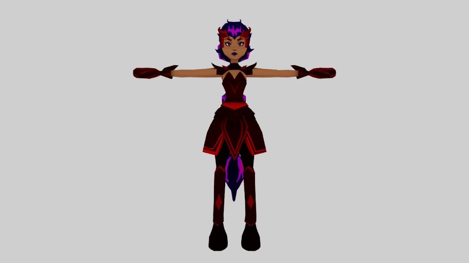
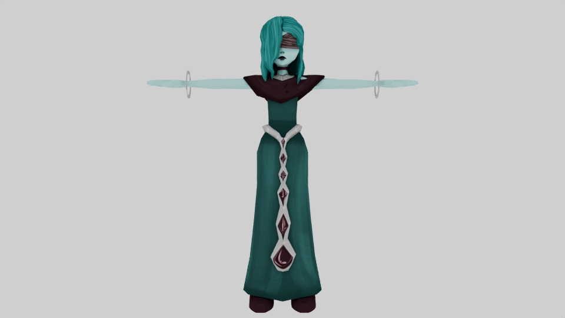
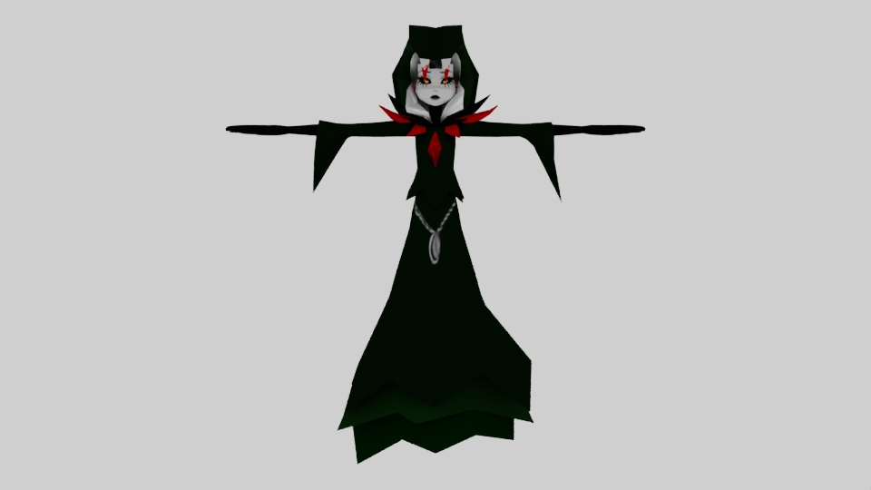
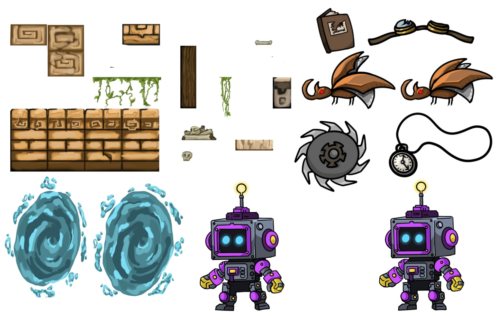
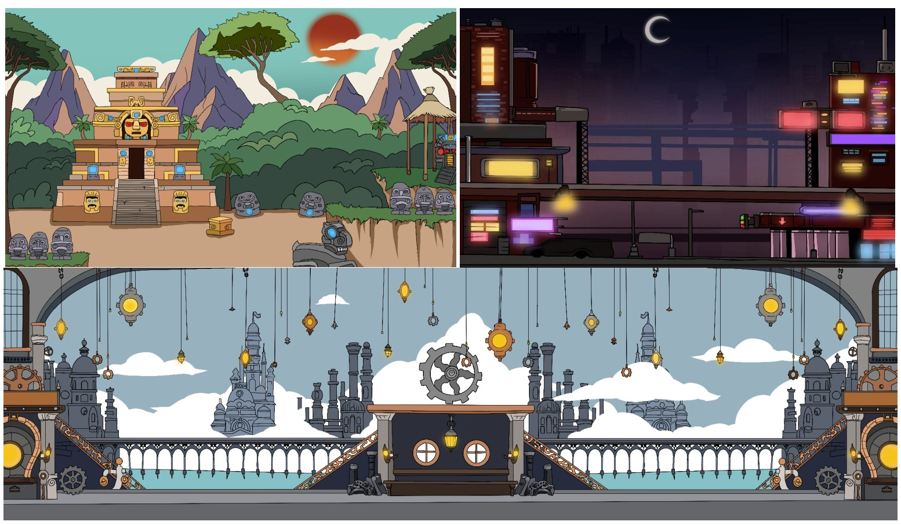

Projects
Thirteenth Rising
3D Individual Game Project
This artifact is a game that I worked on throughout the span of six of my classes. I personally created the music, coded the gameplay, and built the 3D assets.
Through this project, I learned how to manage workflows across multiple disciplines while improving my skills in both programming and 3D modeling. It was especially rewarding because I was constantly integrating new techniques and pushing myself to expand my knowledge.
Skills & Technologies
Unity, Maya, Blender, C#, VCV Rack, Audacity
Images
Click on images to expand





Fragments of Time
This artifact is a group-based game with multiple levels. I worked in a team of four, where we delegated tasks and collaborated to complete the project.
This experience helped me develop project management skills and taught me how to effectively communicate and contribute within a team environment. It was fun because we were able to bring multiple creative ideas together into one cohesive game.
Skills & Technologies
Unity, Photoshop, Animate, C#, GitHub
Images
These photos are some of the 2D assets I created for the project. For Fragments of Time, we went with a concept where there is a different aesthetic that influences each level. These aesthetics are based on different time periods including ancient Aztecs, Steampunk, and Cyberpunk. The influence of these time periods needed to be shown through all aspects of the art in the specified levels. The player character has visible changes between each level as well as the traps, backgrounds, tilemaps and memory objects. This was an interesting thing to adapt as the artist because it challenged me to look into different atmospheres for games and how certain aspects can strongly influence the games aesthetic.
Click on images to expand



Detective in Distress
This is a interactive comic game created in a team of four. The premise of this visual novel style game is that the player follows the main character, a detective, as he pieces together clues that help him find the missing person. Each member of the team was responsible for a different part of the game. I was responsible for the noir and child themed levels, where I created the 2D assets and helped code some of the gameplay.
Click on images to expand
Skills & Technologies
Unity, Photoshop, Procreate, C#
Images
Click on images to expand
.jpg)
.jpg)
.jpg)
.jpg)
.jpg)
Rift Force
This project was focused on building a stronger understanding of Unity and game development. It was the first full game I created.
It helped me better understand my capabilities in game design, as well as character and story development. The most enjoyable part was pushing beyond my initial skill level and ending up with a final product that exceeded my expectations.
Skills & Technologies
Unity, Photoshop, Animate, C#
Images
Click on images to expand